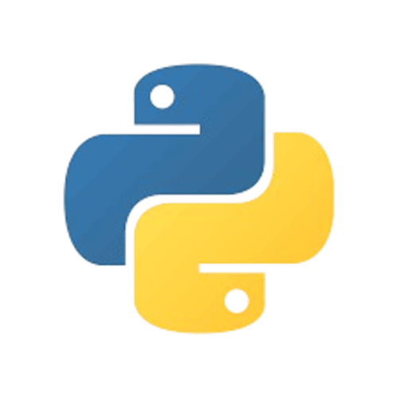

Formação Academica
 - Centro Universitário Internacional UNINTER
Bacharelado, Engenharia de Software · (2023 - )
- Centro Universitário Internacional UNINTER
Bacharelado, Engenharia de Software · (2023 - )
 - Universidade Potiguar
Bacharelado, Ciência da Computação · (2023 - 2024)
- Universidade Potiguar
Bacharelado, Ciência da Computação · (2023 - 2024)
- Estadual Professor José Mamede Ensino Médio · (2012 - 2015)
Cursos
 - The legend of Python (Codédex)
- Cybersecurity essentials (Cisco Academy)
 - Networking Essentials (Cisco Academy)
- Networking Essentials (Cisco Academy)
×